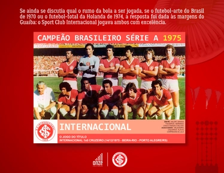
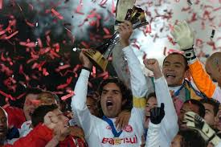
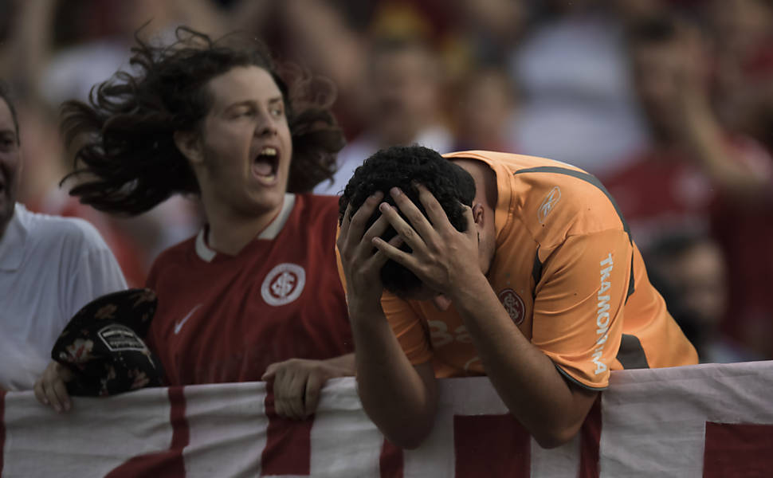

Minhas Conquistas

COMO TUDO COMEÇOU
Cansado dos times não aceitarem qualquer pessoa no elenco, o time do povo nasceu com intuito de unir todo e qualquer pessoa que quisesse jogar fuebol profissionalmente

GRANDES NOMES DO CLUBE
"Grandes nomes passaram pelo clube e deixara marcados na história do clube, jogadores e treinadores que ficaam para sempre na memória de um torcedor"

AS DIFICULDADES
Assim como qualquer outro time, o inter passou por algumas dificuldades, como o rebaixamento para a serie B do campeonato Brasileiro em 2016, a morte do seu maior idolo, Fernandão,em 2014 com a queda de seu helicóptero